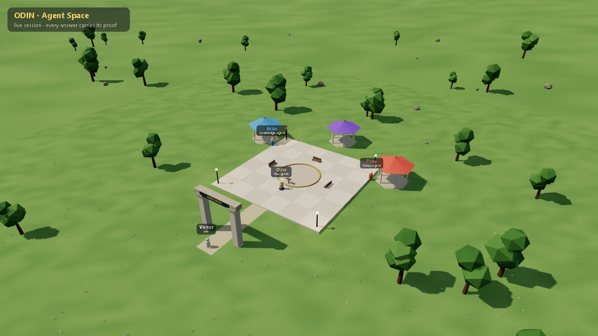

What it is.
Dispatches.
Each session becomes a dispatch: the recording, each question with its answer, and where the answer came from. Newest first.
Follow the lab.
New dispatches will be shared on these channels. A channel that does not exist yet says so.